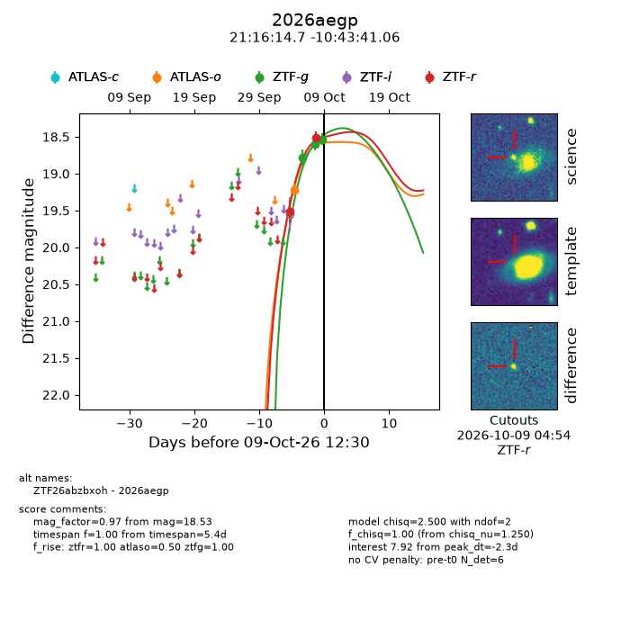
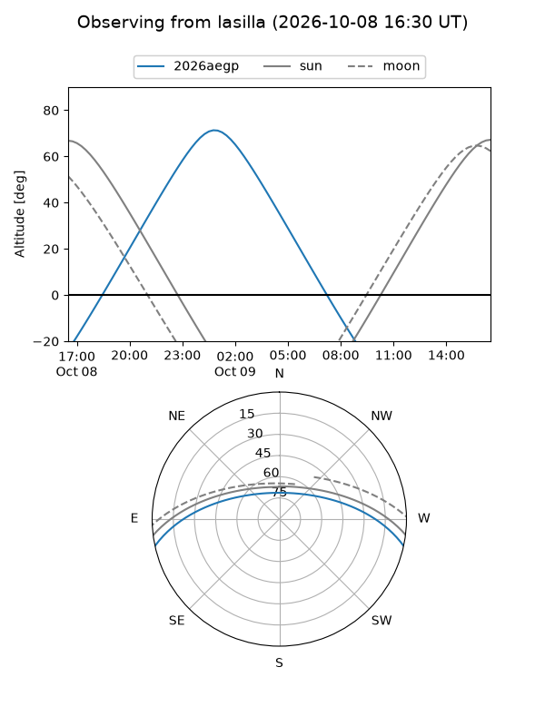
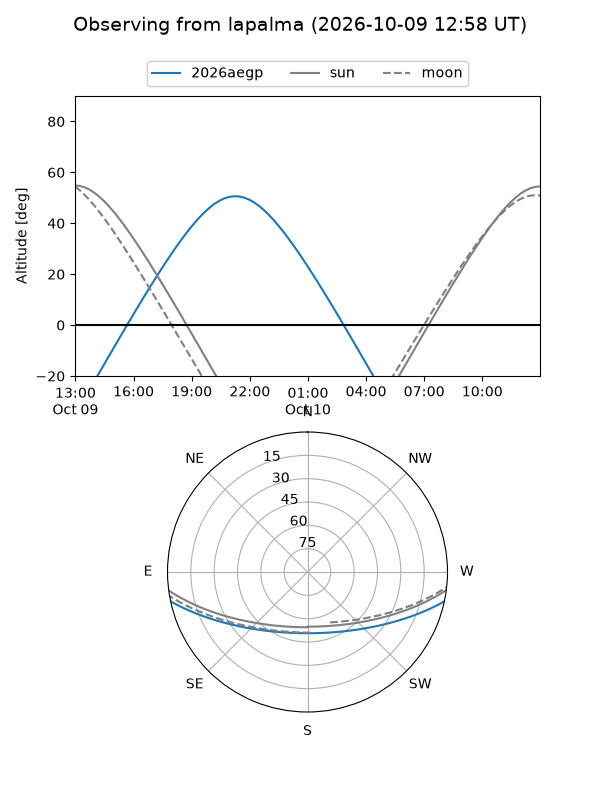
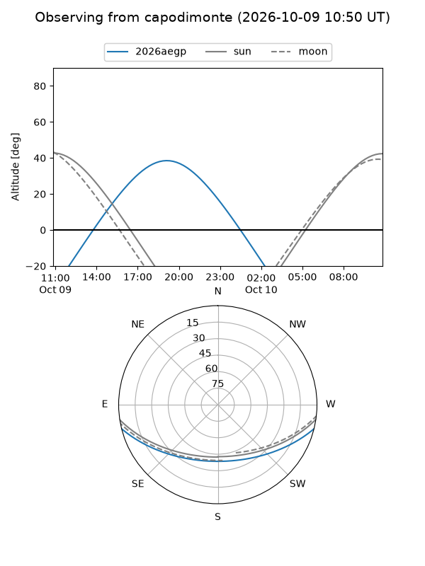
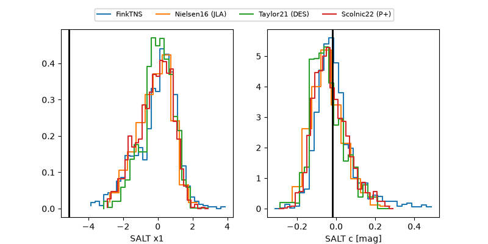

2026aegp
Target 2026aegp at 2026-10-09 12:32
Aliases and brokers:
FINK-ZTF: ztf.fink-portal.org/ZTF26abzbxoh
Lasair-ZTF: lasair-ztf.lsst.ac.uk/objects/ZTF26abzbxoh
ALeRCE-ZTF: alerce.online/object/ZTF26abzbxoh
YSE-PZ: ziggy.ucolick.org/yse/transient_detail/2026aegp
TNS name: wis-tns.org/object/2026aegp
Direct TNS query: direct search
alt names
ZTF26abzbxoh (ztf,fink_ztf)
2026aegp (tns,yse)
Coordinates:
equatorial (ra, dec) = 319.0613,-10.72807
equatorial (HMS+DMS) = 21:16:14.71,-10:43:41.06
galactic (l, b) = (40.0453,-36.96646)
Flags:
peak dt: -2.3
Photometry:
last atlaso=19.22, ztfg=18.53, ztfr=18.51
1 atlaso, 3 ztfg, 2 ztfr detections
Lightcurve

Visibility



Additional plots
